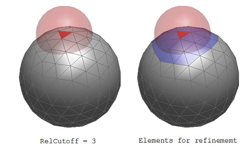
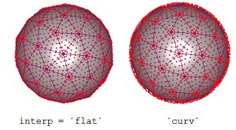

Particle integration
The performance and accuracy of MNPBEM simulations depends on the numerical integration performed over boundary elements located close to each other. This integration is done in the initialization of Green functions and BEM solvers, and is controlled through the option structure. In the following we discuss separately the options passed to comparticle and to the Green functions and BEM solvers.
Contents
Quadface class
% initialization of COMPARTICLE object
p = comparticle( epstab, ptab, inout, closed, op, PropertyName, PropertyValue );
In the initialization of a comparticle object one can pass additional options and arguments that control the integration rules used for boundary element integration. More specifically, the quad property of the particle class becomes initialized with the integration class quadface. This integration class can be also initialized separately
% initialize integration class
quad = quadface( op, PropertyName, PropertyValue );
The integration points can be plotted with plot(quad) and can be controlled by the following parameters
- 'rule' defines the integration rule for triangle and quadrilateral boundary elements. We recommend to not change the default parameter.
- 'refine' refines the integration within a boundary element by increasing the number of integration points by a factor refine, compare refine = 1 with refine = 3. A high number of integration points may be needed for particles with strongly elongated boundary elements or for particles with small gaps.
- 'npol' controls the number of integration points for the integration of the diagonal elements of Green functions, i.e. for the integration within one boundary element. Compare npol = 10 with npol = 20.
- 'interp' determines whether an integration over the 'flat' or 'curved' boundary elements is performed.
Green function integration
% initialization of BEM solver for particle P bem = bemsolver( p, op, PropertyName, PropertyValue ); % initialization of Green function between particle or points P1 and P2 g = greenfunction( p1, p2, op, PropertyName, PropertyValue );
In the initialization of BEM solvers or Green functions the option structure and the additional properties determine over which boundary elements a refined integration is performed. This is essentially controlled by the following parameters
- 'RelCutoff' determines for a given boundary element those elements for which an integration is performed. To this end, one first computes a sphere that encloses the boundary element. Next, the sphere radius is multiplied by 2*RelCutoff and all boundary elements that lie within the enlarged sphere are selected for a refined boundary integration.
- 'AbsCutoff' gives an absolute value for the distance used for refined particle boundary integration.
By default, we use a value of RelCutoff=3 which appears to provide sufficiently accurate results in all cases.

Example
In this example we show how to plot the integration points on a sphere, and compare flat and curved boundary elements.
% set up unit spheres with 60 vertices p1 = trisphere( 60, 'interp', 'flat' ); p2 = trisphere( 60, 'interp', 'curv' ); % move second sphere to the right p2 = shift( p2, [ 1.5, 0, 0 ] ); % get integration points pos1 = quad( p1 ); pos2 = quad( p2 ); % plot spheres plot( [ p1; p2 ], 'FaceColor', 0.8 * [ 1, 1, 1 ], 'EdgeColor', 'b' ); hold on % plot integration points plot3( pos1( :, 1 ), pos1( :, 2 ), pos1( :, 3 ), 'r.' ); plot3( pos2( :, 1 ), pos2( :, 2 ), pos2( :, 3 ), 'r.' );

Copyright 2017 Ulrich Hohenester